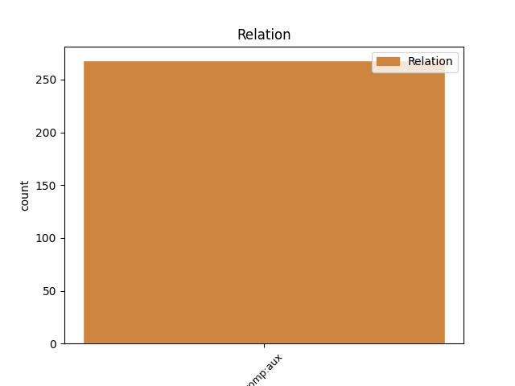
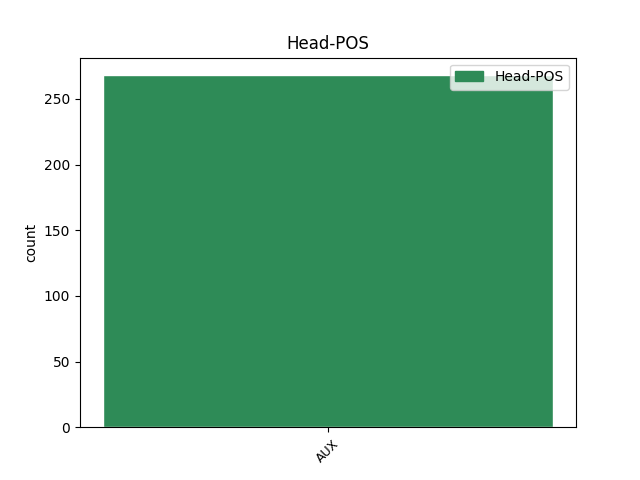
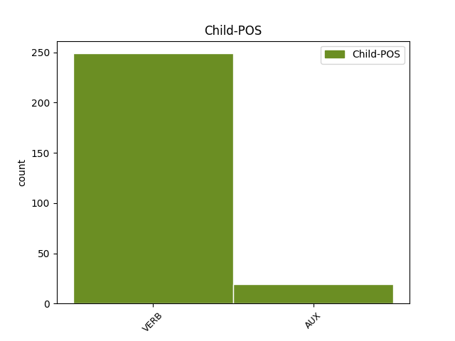

Distribution of features within this leaf



Agreement Rules sorted by frequency.
- When the dependent token is the complement for auxiliary(comp:aux) of the head token,
1 Ok _ _ _ _ 0 _ _ _
2 @user _ _ _ _ 0 _ _ _
3 ho avere AUX VA Mood=Ind|Number=Sing|Person=1|Tense=Pres|VerbForm=Fin 0 _ _ _
4 capito capitare VERB V Mood=Ind|Number=Sing|Person=1|Tense=Pres|VerbForm=Fin 3 comp:aux _ _
5 torno _ _ _ _ 0 _ _ _
6 a _ _ _ _ 0 _ _ _
7 fare _ _ _ _ 0 _ _ _
8 esami _ _ _ _ 0 _ _ _
9 per _ _ _ _ 0 _ _ _
10 il _ _ _ _ 0 _ _ _
11 debito _ _ _ _ 0 _ _ _
12 , _ _ _ _ 0 _ _ _
13 torno _ _ _ _ 0 _ _ _
14 a _ _ _ _ 0 _ _ _
15 lavorare _ _ _ _ 0 _ _ _
16 che _ _ _ _ 0 _ _ _
17 è _ _ _ _ 0 _ _ _
18 meglio _ _ _ _ 0 _ _ _
19 ! _ _ _ _ 0 _ _ _
20 #labuonascuola _ _ _ _ 0 _ _ _
Disagree Examples:
1 il _ _ _ _ 0 _ _ _
2 mio _ _ _ _ 0 _ _ _
3 lavoro _ _ _ _ 0 _ _ _
4 e _ _ _ _ 0 _ _ _
5 fare _ _ _ _ 0 _ _ _
6 male _ _ _ _ 0 _ _ _
7 a _ _ _ _ 0 _ _ _
8 la _ _ _ _ 0 _ _ _
9 gente _ _ _ _ 0 _ _ _
10 e _ _ _ _ 0 _ _ _
11 invece _ _ _ _ 0 _ _ _
12 ... _ _ _ _ 0 _ _ _
13 mi _ _ _ _ 0 _ _ _
14 sono essere AUX VA Mood=Ind|Number=Sing|Person=1|Tense=Pres|VerbForm=Fin 0 _ _ _
15 fatta fare VERB V Gender=Fem|Number=Sing|Tense=Past|VerbForm=Part 14 comp:aux _ _
16 male _ _ _ _ 0 _ _ _
17 io _ _ _ _ 0 _ _ _
18 ... _ _ _ _ 0 _ _ _
19 xD _ _ _ _ 0 _ _ _
20 ! _ _ _ _ 0 _ _ _
1 Berlusca _ _ _ _ 0 _ _ _
2 ha _ _ _ _ 0 _ _ _
3 problemi _ _ _ _ 0 _ _ _
4 di _ _ _ _ 0 _ _ _
5 doppia _ _ _ _ 0 _ _ _
6 personalità _ _ _ _ 0 _ _ _
7 : _ _ _ _ 0 _ _ _
8 ha avere AUX VA Mood=Ind|Number=Sing|Person=3|Tense=Pres|VerbForm=Fin 0 _ _ _
9 appena _ _ _ _ 0 _ _ _
10 smentito smentire VERB V Gender=Masc|Number=Sing|Tense=Past|VerbForm=Part 8 comp:aux _ _
11 ( _ _ _ _ 0 _ _ _
12 in _ _ _ _ 0 _ _ _
13 viva _ _ _ _ 0 _ _ _
14 voce _ _ _ _ 0 _ _ _
15 ) _ _ _ _ 0 _ _ _
16 di _ _ _ _ 0 _ _ _
17 potere _ _ _ _ 0 _ _ _
18 / _ _ _ _ 0 _ _ _
19 volere _ _ _ _ 0 _ _ _
20 staccare _ _ _ _ 0 _ _ _
21 la _ _ _ _ 0 _ _ _
22 spina _ _ _ _ 0 _ _ _
23 a _ _ _ _ 0 _ _ _
24 il _ _ _ _ 0 _ _ _
25 Governo _ _ _ _ 0 _ _ _
26 #Monti _ _ _ _ 0 _ _ _
27 . _ _ _ _ 0 _ _ _
1 Ogni _ _ _ _ 0 _ _ _
2 città _ _ _ _ 0 _ _ _
3 qualche _ _ _ _ 0 _ _ _
4 guaio _ _ _ _ 0 _ _ _
5 ha _ _ _ _ 0 _ _ _
6 " _ _ _ _ 0 _ _ _
7 @user _ _ _ _ 0 _ _ _
8 : _ _ _ _ 0 _ _ _
9 La _ _ _ _ 0 _ _ _
10 manovra _ _ _ _ 0 _ _ _
11 di _ _ _ _ 0 _ _ _
12 il _ _ _ _ 0 _ _ _
13 governo _ _ _ _ 0 _ _ _
14 #Monti _ _ _ _ 0 _ _ _
15 è essere AUX VA Mood=Ind|Number=Sing|Person=3|Tense=Pres|VerbForm=Fin 0 _ _ _
16 stata essere AUX VA Gender=Fem|Number=Sing|Tense=Past|VerbForm=Part 15 comp:aux _ _
17 scritta _ _ _ _ 0 _ _ _
18 da _ _ _ _ 0 _ _ _
19 il _ _ _ _ 0 _ _ _
20 Principe _ _ _ _ 0 _ _ _
21 Giovanni _ _ _ _ 0 _ _ _
22 e _ _ _ _ 0 _ _ _
23 da _ _ _ _ 0 _ _ _
24 lo _ _ _ _ 0 _ _ _
25 sceriffo _ _ _ _ 0 _ _ _
26 di _ _ _ _ 0 _ _ _
27 Nottingham _ _ _ _ 0 _ _ _
28 " _ _ _ _ 0 _ _ _
1 : _ _ _ _ 0 _ _ _
2 abbiamo avere AUX VA Mood=Imp|Number=Plur|Person=1|Tense=Pres|VerbForm=Fin 0 _ _ _
3 voluto volere VERB V Gender=Masc|Number=Sing|Tense=Past|VerbForm=Part 2 comp:aux _ _
4 la _ _ _ _ 0 _ _ _
5 bicicletta _ _ _ _ 0 _ _ _
6 ( _ _ _ _ 0 _ _ _
7 il _ _ _ _ 0 _ _ _
8 Governo _ _ _ _ 0 _ _ _
9 Monti _ _ _ _ 0 _ _ _
10 ) _ _ _ _ 0 _ _ _
11 , _ _ _ _ 0 _ _ _
12 ed _ _ _ _ 0 _ _ _
13 ora _ _ _ _ 0 _ _ _
14 si _ _ _ _ 0 _ _ _
15 deve _ _ _ _ 0 _ _ _
16 pedalare _ _ _ _ 0 _ _ _
17 ... _ _ _ _ 0 _ _ _
1 Rocco _ _ _ _ 0 _ _ _
2 Siffredi _ _ _ _ 0 _ _ _
3 é essere AUX VA Mood=Ind|Number=Sing|Person=3|Tense=Pres|VerbForm=Fin 0 _ _ _
4 arrivato arrivare VERB V Gender=Masc|Number=Sing|Tense=Past|VerbForm=Part 3 comp:aux _ _
5 secondo _ _ _ _ 0 _ _ _
6 a _ _ _ _ 0 _ _ _
7 gli _ _ _ _ 0 _ _ _
8 Oscar _ _ _ _ 0 _ _ _
9 di _ _ _ _ 0 _ _ _
10 il _ _ _ _ 0 _ _ _
11 porno _ _ _ _ 0 _ _ _
12 x _ _ _ _ 0 _ _ _
13 esser _ _ _ _ 0 _ _ _
14 si _ _ _ _ 0 _ _ _
15 fatto _ _ _ _ 0 _ _ _
16 più _ _ _ _ 0 _ _ _
17 donne _ _ _ _ 0 _ _ _
18 di _ _ _ _ 0 _ _ _
19 tutti _ _ _ _ 0 _ _ _
20 ma _ _ _ _ 0 _ _ _
21 Mario _ _ _ _ 0 _ _ _
22 Monti _ _ _ _ 0 _ _ _
23 é _ _ _ _ 0 _ _ _
24 arrivato _ _ _ _ 0 _ _ _
25 1mo _ _ _ _ 0 _ _ _
26 x _ _ _ _ 0 _ _ _
27 esser _ _ _ _ 0 _ _ _
28 si _ _ _ _ 0 _ _ _
29 in.. _ _ _ _ 0 _ _ _
30 tutti _ _ _ _ 0 _ _ _